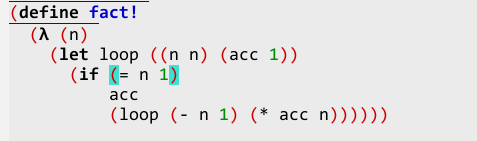

Меню:
The Scheme language traditionally has very good support in Emacs. This support is provided by the set of packages, that either could work with different implementation of Scheme (scheme-mode, cmuscheme, quack), or could work only with concrete implementations of language (xscheme, gds, bee-mode, gambit). Usually, packages, implemented for concrete implementations of Scheme, have more features, comparing with packages, designed for work with different Scheme's implementations.
In this article I'll try to describe all packages, related to the Scheme support. First, I'll describe packages, working with all implementations of Scheme, and in the last sections, I'll describe packages, created for concrete implementations.
Scheme-mode
Scheme-mode, that is distributed with Emacs, is modification of the lisp-mode, adapted to work with the Scheme programming language. This package implements following functionality:
- syntax highlighting;
- work with language expressions;
- indenting of source code;
- highlighting of the paired brackets.
There are several packages, built on the top of the scheme-mode — cmuscheme, xscheme, etc., that extends it functionality by adding functions for code execution directly from Emacs buffers, etc.
As scheme-mode is based on the lisp-mode, it has same source code editing commands, as lisp-mode, so please look to the corresponding section of article, describing work with Lisp.
This mode is enabled automatically for all files with standard extensions of Scheme source
code —
.scm, .ss, etc. To enable this mode for other files, you need to add following
piece of code into your initialization file (replacing .scm with needed extension):
(add-to-list 'auto-mode-alist '("\\.scm$" . scheme-mode))
If you want to change behaviour of the package, you can set additional parameters in the
function, specified in the scheme-mode-hook, and that will called during enabling of this
mode in concrete buffer. Besides this, some of parameters you can set using standard
customization commands. Corresponding customization group is called scheme.
Cmuscheme
The cmuscheme package was written by Olin Shivers long time ago, but it's still one of the most popular packages for work with Scheme. This package implements interactive work with interactive Scheme interpreters. This interactive work is implemented via the comint package, included into Emacs distribution.
Customization of the package
Installation of package is pretty simple — just put into your initialization file following lines of code:
(autoload 'run-scheme "cmuscheme" "Run an inferior Scheme" t) (setq scheme-program-name "mzscheme")
and package will automatically loaded when you call the run-scheme command first time.
Second line of example is used to set name of the Scheme interpreter, that you can replace
with any other name. All settings for this package is also available via customization
group with name cmuscheme.
In the interpreter buffer, that is created by package, the special major mode is used —
inferior-scheme-mode, that you can customize with inferior-scheme-mode-hook. Besides
this, if there is ~/.emacs_SCHEMENAME file, or ~/.emacs.d/init_SCHEMENAME.scm file (where
SCHEMENAME is a name of Scheme interpreter), then Scheme expressions from them will
executed right after start of interpreter.
Work with package
Main command of the package is run-scheme, that run selected Scheme interpreter, and
allows to interactively execute Scheme expressions without leaving Emacs.
You can control which portion of source code (selected region, function's definition, or
concrete expression) will evaluated by using different commands, defined in the package —
the scheme-send-definition command (C-c C-e or C-M-x key bindings) pass to interpreter
definition of current function; the scheme-send-region command (C-c C-r) allows to
executed source code from selected region; the scheme-send-last-sexp command (C-x C-e) is
used to evaluation of expression, before the current point; and the scheme-load-file
command (C-c C-l) allows to load to interpreter whole file — it allows to load
expressions from any file, specified by user, not only from current buffer.
The Scheme interpreter is run in the separate buffer that is called *scheme*1, to which
results of evaluations is also printed. To quick switch to this buffer from the buffer
with source code, there is the switch-to-scheme command (C-c C-z). Besides this, as it's
often need to execute some code and look to the results of its execution, package defines
two additional commands that evaluate code and switch to *scheme* buffer — the
scheme-send-definition-and-go command (C-c M-e) for evaluation of current definition, and
the scheme-send-region-and-go command (C-c M-r) for evaluation of selected code.
To work with Scheme macros, the package implements the scheme-expand-current-form command
(C-c C-x), that allows to expand definition of the current macro into corresponding code
in Scheme. Code expansion is performed by interpreter and printed to the *scheme* buffer.
And if your Scheme implementation, supports compilation of source code, then you can use
the scheme-compile-file command (C-c C-k) and the scheme-compile-definition command (C-c
M-c), that perform compilation of the file or current definition.
As was mentioned above, in the interpreter's buffer the special major mode is used —
inferior-scheme-mode that allows to use all commands of comint mode, and some additional
cmuscheme commands —
scheme-compile-file (C-c C-k), scheme-load-file (C-c C-l),
scheme-send-last-sexp (C-x C-e) & scheme-send-definition (C-M-x).
Quack
The Quack package is an extension for the cmuscheme package, and it implements different additional features (most of them is designed for work with PLT Scheme):
- separate menu, from which user can access documentation about language, interpreter & SRFI, and also search for description of function with name under point;
- new sets of expressions for font-lock highlighting — for PLT Scheme and extended scheme for other implementations;
- ability to use Greek lambda symbol for lambda-expressions (examples are below);
- additional options & commands for insertion of opening & closing brackets;
- extensions for source code indenting, with ability to set different schemes for different Scheme implementations;
- extended version of the
run-schemecommand, that knows about different Scheme implementations and names of their interpreters, and that also remember name of last run interpreter; - extended version of the
switch-to-schemecommand; - ability to view content of the
.pltcollections, and commands for open of Dired buffer for given collection.
Installation & customization
This package is written by Neil Van Dyke, and available for download from author's site. Package is installed by copying files to directory, where Emacs could find them, and putting following command into initialization file:
(require 'quack)
All settings could be set via customization group with name quack, or using the Quack
menu. These settings allow to specify URLs for manuals & SRFIs, which prefix key will be
used for Quack's commands, etc.
For PLT Scheme users is recommended to download manuals for this implementation from the
project's site, and install them into doc collection. Location of the PLT Scheme
collections is defined either by the quack-pltcollect-dirs variable, in which you need to
list all of directories with collections, or by PLTHOME and/or PLTCOLLECTS environment
variables.
To proper work of the package, the wget program is also required — it will used for
access to SRFI.
Work with package
After loading of package, several additional commands become available to use. User can
run these commands either via key bindings, and/or direct call via M-x, or selecting them
via the Quack menu.
For work with documentation the package provides several commands. The quack-view-manual
command (C-c C-q m) is used to show documentation in a web-browser. This command allows
to view not only base Scheme documentation, but also documentation for concrete
implementations. To show SRFI's there is sepearate command —
quack-view-srfi (C-c C-q
s), that asks a number of document, and shows it in browser. For PLT Scheme users there
is also the quack-view-keyword-docs command (C-c C-q k), that shows documentation for
given keyword (work of this command is depend on the proper installation of the PLT
Scheme).
As was mentioned above, the package provides the run-scheme command (C-c C-q r), that
allows to run Scheme interpreters, selecting them from list (and including run of them
with all needed options), and also remembers last user's choice.
For users of PLT Scheme also provided additional commands for work with collections. The
quack-find-file command (C-c C-q f) opens file, using its name from current context. For
example, if you'll run this command while you staying on expression (require (lib
"list.ss")), then package will suggest to open file list.ss from mzlib collection.
Besides this, there is the quack-dired-pltcollect command, that allows to open Dired
buffer for given PLT Scheme collection (when typing name of collection, user can use names
completion).
This package also implements several commands, that change source code formatting, making
work with it more comfortable. The quack-tidy-buffer command (C-c C-q t) performs
re-inditing of source code, replace tabs with spaces, removes unneeded empty lines, and
removes spaces at the end of lines, and so on. The quack-toggle-lambda command (C-c C-q
l) changes definition of the current function from (define (func args) ...) to (define
func (lambda (args) ..)), that allows to show lambda character in the source code (if this
is enabled in options), for example:

The GCA package
The GCA package is created for effective work with source code written in Scheme language. It was designed for work with Gauche Scheme, but it could be used with other implementations. As the quack package, it extends commands of the cmuscheme package. This package provides following features:
- insertion of source code snippets, using templates;
- show function's descriptions;
- completions of names;
This package could be downloaded from the author's site, but it almost hasn't documentation, and existing is written in Japan. In English is available only very short description with example of configuration, and links to the source code & videos, showing work with package.
The GDS package
The gds package extends the cmuscheme package with following features:
- completion of the names (that are known for corresponding Guile process);
- access to built-in Guile commands —
help&apropos; - debugging of source code — show of values for variables & stack, step-by-step execution, etc.
This package was developed for Guile Scheme, and has dependencies on the Guile's features. You can find detailed information in the Guile manual.
This package differs from other packages — instead of communication via standard input/output, it uses simple network protocol for data transmission. This approach allows to implement more features, but it also requires a dedicated Scheme process (the gds server), that will be used for communication with other processes.
Installation and customization
The gds package is distributed together with latest versions of the Guile Scheme, so you just need to add directory with package to the Emacs's search path, and add following line to your initialization file:
(require 'gds)
This command will load the package, and spawn separate process, that will responsible for
communication with Scheme interpreters. I need to mention, that this will require, that
special package written in Scheme will available in the Guile's search path. If this
package is located in non-standard place, you can specify its location with
gds-scheme-directory variable, or initialization will fail.
Other settings could be specified via the gds customization group.
Work with source code
For source code evaluation the gds package uses same key bindings as cmuscheme package.
The only exception is the gds-eval-expression command (C-c C-e), that evaluates expression
entered in mini-buffer.
The most important features, implemented by gds are completion of names of functions & variables, getting help information for concrete symbols, and/or search for symbol using part of name.
Completion of names is performed by gds-complete-symbol command (M-TAB), that tries to
find all known symbols, whose names are match to string before point. If only one name
was found, then it inserted immediately, but if there are several names, then new buffer
will displayed, where user can select needed name.
To get help information for concrete symbol you can use the gds-help-symbol command (C-h
g), that displays same information as direct evaluation of the (help SYMBOL) expression in
Guile interpreter. User is prompted for a name, and as default the name under point is
used. If you don't remember precise symbol's name, then you can use the gds-apropos
command (C-h G), that performs (apropos REGEXP) in Guile interpreter, and displays list of
symbols, whose names are matched to the entered regex.
Debugging
Developer can explicitly control execution of the gds from debugged program. To do this, he should add some code to his program, that will lead to pass of data to gds server. You can find more information about this in the Guile manual.
To use gds features during interactive work, user should explicitly specify which modules should be loaded to provide work with gds. For example, following code will load all modules, that are necessary for work:
(use-modules (ice-9 gds-client debugging traps)) (named-module-use! '(guile-user) '(ice-9 session)) (gds-accept-input #f)
After execution of this code, you'll able to work with gds. To set break point in
procedure with name proc_name, use following code, that should be evaluated in the buffer
with source code:
(install-trap (make <procedure-trap> #:behaviour gds-debug-trap #:procedure proc_name))
and after call of given procedure, you'll get in gds buffer following trace:
Calling procedure:
=> s [proc_name]
s [primitive-eval (proc_name)]
--:** PID XXXXX (Guile-Debug)--All--------
In this buffer you can navigate through stack, view its state, continue execution of program (including step-by-step execution). There are several commands, that provide execution of different tasks in stack buffer.
For navigation through call stack, user can use following keys: u, C-p or up arrow keys
are used to move up in the call stack, and selecting next frame (the gds-up command), d,
C-n and down arrow keys are used to move down through call stack (gds-down), and the RET
key is used for selecting of the frame under point. Selection of some frame lead to show
of corresponding part of source code. Besides this, some commands will use environment,
corresponding to selected frame..
Following commands could be used for perform different operations in stack buffer:
gds-evaluate(theekey)- allow to evaluate expression, using environment for selected frame. Result of expression is shown in the echo area;
gds-frame-info(i)- shows information about selected frame — line in file with source code, frame type, etc.;
gds-frame-args(A)- shows frame arguments;
gds-proc-source(S)- shows source code for called procedure. This is very useful when
procedure was created by anonymous lambda-expression, as such procedures are shown as
<procedure #f (...)>in call stack, so you couldn't understand what will executed next.
To continue execution of program, user can use following commands:
gds-go(g,corq)- continue execution of program;
gds-step-file(SPC)- execute next operation in same source file, as selected stack frame. Functions from other files are executed without stopping;
gds-step-into(i)- execute next operation with entering into called procedure;
gds-step-over(o)- execute program until end of current stack frame.
Using these functions developer can get detailed information about program's state, and has ability to find and fix errors.
Scheme48
the scheme48 package is also built on top of the cmuscheme, and it extends it with support for Scheme48 implementation. This package extends font-lock with support of keywords and operators, specific for Scheme48. It also introduce new key bindings for expressions evaluation.
You can download this package from EmacsWiKi, and install it like another packages — copy it in directory, where Emacs will find it, and add load command to your initialization file.
Xscheme
The xscheme package has almost same features as cmuscheme — it allows to perform code evaluation without leaving the buffer with source code. Besides this, it also allows to view call stack, if something goes wrong.
This package works only with MIT Scheme, as it uses some of features, available only in this implementation. The package is distributed together with Emacs, and to use it, you just need to add following command to your initialization file:
(require 'xscheme)
After loading of the package, user can run interpreter with the start-scheme command, and
use corresponding commands for evaluation of code in interpreter. To evaluate expression
before point, user can use either advertised-xscheme-send-previous-expression command (C-x
C-e), or the xscheme-send-previous-expression command (M-RET). Commands
xscheme-send-definition (C-M-x or M-z), xscheme-send-region (C-M-z), and
xscheme-send-buffer (M-o) pass to interpreter definition of current function, selected
region, or whole buffer. To switch to interpreter buffer, user can use the
xscheme-select-process-buffer command (C-c C-s).
Support for Gambit-C
For the Gambit Scheme implementation there is also separate package, based on the cmuscheme, and implementing several operations, supported only for Gambit — debugging, compilation, etc. This package has name gambit, and distributed together with Gambit Scheme. Additional information about Gambit Scheme, and the gambit package, you can find in documentation.
Installation procedure is standard — put gambit.el into some directory, where Emacs will
find it, and add following lines into initialization file:
(autoload 'gambit-inferior-mode "gambit" "Hook Gambit mode into cmuscheme.") (autoload 'gambit-mode "gambit" "Hook Gambit mode into scheme.") (add-hook 'inferior-scheme-mode-hook (function gambit-inferior-mode)) (add-hook 'scheme-mode-hook (function gambit-mode)) (setq scheme-program-name "gsi -:d-")
Gambit interpreter is run with run-scheme command, implemented in cmuscheme, but the
gambit package add to it procedures for output filtering, allowing to get information
about source file. After run of interpreter, user can use standard cmuscheme key bindings
for evaluation and compilation of code —
C-x C-e, C-c C-l, C-c C-k, etc.
In addition to cmuscheme commands, the gambit package provides several commands, that could be used for debugging of source code:
gambit-continue(F8илиC-c c)- continue execution of the code. The same as
,cin interpreter; gambit-crawl-backtrace-newer(F9илиC-c ])- switch to previous stack frame. The same
as
,-in interpreter; gambit-crawl-backtrace-older(F10илиC-c [)- switch to next stack frame. The same as
,+in interpreter; gambit-step-continuation(F11илиC-c s)- execute one operation with entering into
calling function. The same as
,sin interpreter; gambit-leap-continuation(F12илиC-c l)- execute one operation without entering into
calling function. The same as
,lin interpreter; gambit-kill-last-popup(C-c _)- delete window, that was created for displaying of source code.
There also more short key bindings for these commands: M-c, M-[, M-], M-s, M-l and M-_,
but they aren't activated by default, as they doesn't match to Emacs guidelines for key
bindings. To enable them, you need to execute following expression (and put it into
initialization file):
(setq gambit-repl-command-prefix "\e")
Bee-mode (bmacs)
With the bmacs package authors had tried to create integrated development environment for work with Bigloo Scheme. This package implements following features:
- debugging;
- profiling;
- automatic creation & update of Makefiles;
- navigation in source code;
- integration with version control systems;
- display of documentation;
- interactive evaluation of source code;
- macro expansion;
- basic support for literate programming.
For proper work of this package some number of additional utilities are required, but most of them are distributed together with Bigloo Scheme. Documentation you can find project's site, or in distribution.
Installation & basic customization
This package is distributed together with Bigloo Scheme and placed in bmacs sub-directory
of distribution. To install this package you need to switch to this sub-directory and
execute following command:
make
make install EMACSDIR=<your site lisp>
that will install all needed files to place, that you specified. After this, you can add following lines to your initialization file, to enable automatic loading of all needed parts when you'll open files with source code2:
(autoload 'bdb "bdb" "bdb mode" t) (autoload 'bee-mode "bee-mode" "bee mode" t) (setq auto-mode-alist (append '(("\\.scm$" . bee-mode) ("\\.sch$" . bee-mode) ("\\.scme$" . bee-mode) ("\\.bgl$" . bee-mode) ("\\.bee$" . bee-mode)) auto-mode-alist))
All settings could be specified via customization group bee, that control behaviour for
the bee-mode, and via groups dbg & bug, that are used to specify settings for debugger.
Work with source code
After loading of bee-mode user can execute commands using the pictures in toolbar or
selecting corresponding items from menu Bee, that is appear when this mode is enabled.
To proper indenting of source code, according to Bigloo rules, this package defines
several commands: the bee-indent-sexp command (C-M-q) re-indents current expression,
bee-indent-define (C-c TAB C-d) performs this operation for current function, and
bee-indent-last-sexp (C-c TAB C-l) re-indents expression before point.
One of important thing when you work with source code — commands for search of
definitions of functions & variables. To find variable's definition, you can use the
bee-tags-find command (C-x 5 .) or the bee-tags-find-variable command (C-c C-d f). And to
find definition of the module, you can use the bee-find-module command (C-c C-d m).
Besides this, bee-mode redefines two key binding —
M-. & M-,, that re-bound to the
bee-tag-find and bee-tags-find-next commands, that allows to search definitions of
functions & classes.
To simplify work with modules, bee-mode defines set of commands, that control list of
modules, imported by current file — the bee-import-binding command (C-c RET i), and also
control list of functions & variables, exported from current file — this is commands
bee-export-function (C-c RET f) and bee-export-variable (C-c RET v). Besides this, exists
command, that allows to import symbols from files, written in C —
bee-import-c-file (C-c
RET c), it also updates Makefile, adding dependencies for compilation of corresponding
code file.
The package also provides basic support for literate programming. It allows to insert
into source code, links to descriptions of modules & functions. This is allowed by using
keywords @path, @node & @deffn in comments for modules & functions. The @path & @node
keywords (used in commentary for module's declaration) define file and part of
documentation, that describe given module. The @deffn keyword is used in commentary for
function. By using these keywords, developer get ability to fast navigation between code
and its description, allowing to make code more readable.
Compilation & execution of source code
As other packages, the bmacs allows to execute Scheme code directly from Emacs buffer. To
perform these operations, you need to execute the ude-repl-other-frame command (C-c C-r
C-r), or select corresponding icon in toolbar (Repl), or select corresponding menu item.
After loading of interpreter, user can evaluate source code using following commands:
ude-repl-send-buffer(C-c C-r b) pass whole buffer to interpreter;ude-repl-send-region(C-c C-r r), pass to interpreter only selected region of source code;bee-repl-send-define(C-c C-r d) evaluates only current definition (define);bee-repl-send-last-sexp(C-c C-r l) evaluates expression before point;bee-repl-send-toplevel-sexp(C-c C-r t) evaluates current expression.
When you working with macros, it's often need to expand them. The bee-mode implements set of commands, that could be used to expand macros in your code (search of macros will performed in whole buffer):
bee-expand-buffer(C-c C-e C-e) expand all macros in current buffer;bee-expand-region(C-c C-e C-r) expand macros in selected region;bee-expand-define(C-c C-e C-d) expand macros in current definition (define)bee-expand-last-sexp(C-c C-e C-l) expand macros in expression before point;bee-expand-toplevel-sexp(C-c C-e C-t) expand macros in current expression.
To compile code, you need to have Makefile, that describe dependencies between modules,
and specify compilation flags. For projects you also need to have root directory —
bee-mode tries to find it by searching for Makefile, .afile or .etags files, or you can
set it with the ude-user-set-root-directory command (C-c C-p C-r) or corresponding
toolbar's icon.
When root directory is specified, Makefile could be generated with the
ude-generate-makefile command (C-c C-c a or C-c C-c C-l), that will ask user for name of
executable, that will created from your source code. If Makefile already exists, this
command will update it, and also rebuild files .afile and .etags. Besides this, you can
edit Makefile with command ude-edit-makefile (C-c C-c e), update it with the
ude-update-makefile command (C-c C-c u), and switch between debug & release versions of
executable with commands ude-makefile-debug-mode (C-c C-c C-d) & ude-makefile-final-mode
(C-c C-c C-f).
When Makefile exists, then you can compile code with the ude-mode-compile-from-menu
command (C-c C-c C-c)3. You can stop compilation with the kill-compilation command (C-c
C-c k). And when compilation is finished, you can run executable with the ude-execute
command (C-c C-c C-r).
Debugging & profiling
Debugger is shipped together with Bigloo, and it allows to perform debugging on the level
of source code. bee-mode supports interaction with debugger from Emacs. To run debugger
you need to execute the bee-debug command (C-c C-b C-b) or select corresponding menu item
or toolbar's icon. But to connect current code to debugger you need explicitly execute
the bee-toggle-connect-buffer command (C-c C-b c) that will link current buffer with
debugger, and allows to set breakpoints, and perform other tasks, related to debugging of
source code.
Profiling of programs is supported out of box, if you generate Makefile with Bigloo tools.
To make code profiling, you need to compile it first with appropriate flags. This
operation is could be performed with the bee-profiler-start command (C-c C-p c). And
after compilation, you can execute the bee-profiler-inspect command (C-c C-p i), that will
run your program, and than it will run the bglprof utility, that will collect and process
data about execution of your program.
Other commands
The package implements commands to get help information. This could be done by executing
the bee-doc-visit command (C-c C-d i), or pressing to the Info icon in toolbar. This
command behaves differently, depending on context — if cursor is on identifier, it
displays information for this identifier, if there is selected region of code, it will try
to find appropriate description. Otherwise, it will ask user for name of section of
documentation, and display it.
Information is taken from files in Info format, that are distributed together with Bigloo. Besides this, search for documentation is performed in sub-directories of current project, and if it found, they it will added to documentation index. User can also specify where to search for additional documentation.
The bmacs package also implements several functions for work with version control systems, that allow to work with them on the project level. But it supports only for limited number of VCSs, so this support become not actual for most of users.
Besides commands, described above, package implements number of functions, dedicated for work with C code, etc. But description of these functions is out of boundaries of this article. You can find they description in documentation bundled with Bigloo.
Support for Scheme in SLIME
The wonderful SLIME package, created for work with Lisp code, also has rudiment support for work with code in Scheme. Currently it supports only two Scheme implementations — Kawa & MIT Scheme. Support for other implementations could be added by implementing protocol that is used by SLIME for work with concrete process4.
To use SLIME with Scheme, you need to perform basic setup of the package, as described in manual, and then load all needed components5. This will look something like this:
(add-hook 'slime-load-hook (lambda () (require 'slime-scheme)))
This command will setup all hooks, that are needed to work with SLIME, but for concrete
implementation you'll need to perform additional setup, as described in corresponding
files —
swank-kawa.scm or swank-mit-scheme.scm.
All other details, related to the SLIME are described in corresponding section.
1. By default you can use only one active Scheme process. But if you need to have several processes at the same time, you can use scheme-here.el package.
2. Besides bee-mode, in the bmacs distribution there are following packages: cee package is used to edit C code, in which you can write Bigloo's extensions; bug-mode provides support for Bigloo debugger; ude (Unix Development Environment) implements commands for compilation, profiling, and other utilities, that could be used when you work with Bigloo.
3. I need to mention, that if there is no Makefile, then this command will run
compilation of program from one source file.
4. So called swank-module.
5. All components needed for work with Scheme, are located in the contrib sub-directory
of the SLIME distribution, so don't forget to include it in Emacs search paths.
Last change: 05.03.2013 16:54
Copyright © 1997-2011Alex Ott · Design by Andreas Viklund ·